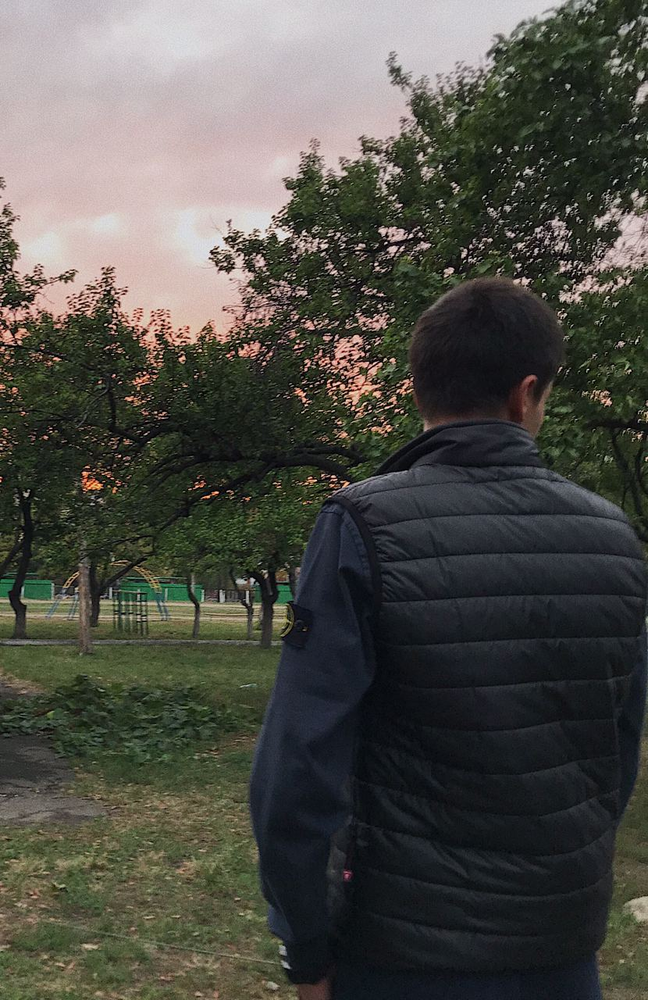
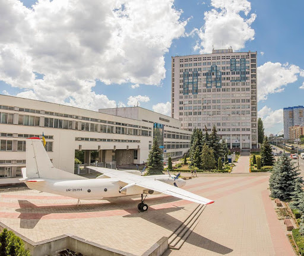
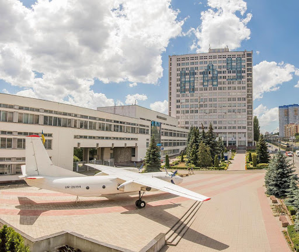

|  |
Неділько Дмитрій Романович
- Студент 2 курсу
- Група: КС - 231
- Факультет - ФККПІ
- Спеціальність: 123 (Комп'ютерна інженерія)
|
НАВЧАННЯ
Спочатку я навчав'ся в школі №311.
Фото школи:


Це була школа лише з першого по четвертий клас. Начання було доволі не зручним, тому що школа знаходилась досить не близько і батькам було не зручно кожного ранку заводити мене. Та було доволі важко прощатись с однокласниками та вчиталями до яких звик.
Потім перейшов в спеціалізовану школу №247 з поглибленим вивченням іноземних мов, в якій і навчався з 5 по 11 клас.
Фото школи:


Ця школа багато чого мене навчила, подарувала багато нових друзів та знайомих. Дуже часто згадую шкільні часи і хотілось ще б на 1-2 роки повернутись і знов це все відчути. Адже на мою думку це одні з найкращих часів життя.
На даний момент навчаюсь в Національному авіаційному університеті (НАУ).
Фото університета:
 

Я, Неділько Дмитрій Романович, студент 2 курсу факультету кібербезпеки, комп'ютерної та програмної інженерії (детальніше можна дізнатись за посиланням). Перше враження від універститету було досить гарним, все дуже сподобалось, особливо приємно, що всі корпуси на одній територіі і ця територія це цілий парк. Моє перше враження досих пір не змінилось і мені все подобається.
Друга сторінка